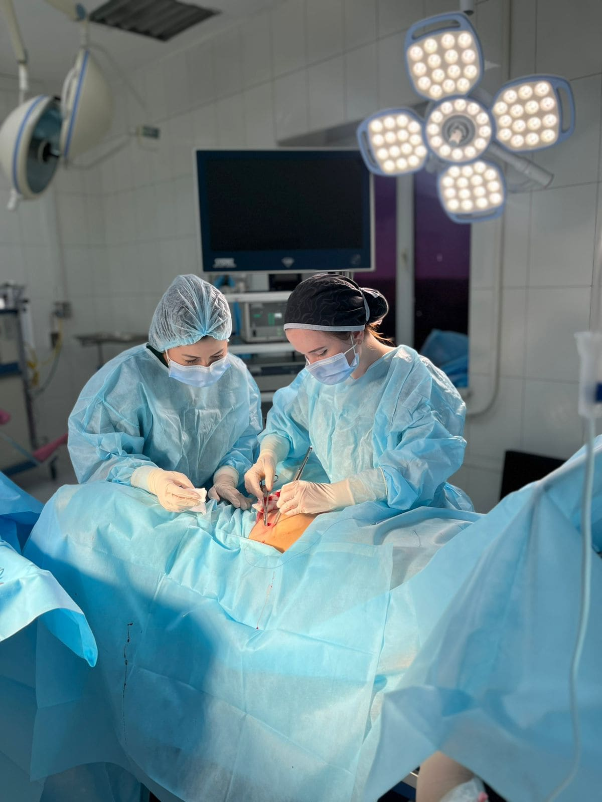

Лечение опущения стенок, миом, эндометриоза, кист. Лапароскопия и малоинвазивные методики — там, где раньше резали «открыто».

✚В оперативной гинекологии я специализируюсь на малоинвазивных вмешательствах: через 3–4 микропрокола вместо разреза. Это значит меньше боли, короче восстановление, аккуратные косметические швы.
УЗИ, анализы, при необходимости — МРТ. Заключения смежных специалистов.
Госпитализация в день операции. Беседа с анестезиологом, разметка.
Под общим наркозом. 3–4 микропрокола по 5–10 мм. Длительность зависит от объёма — от 40 минут до 3 часов.
Под наблюдением. Раннее вставание, минимум лекарств. Выписка с подробным планом восстановления.
Сама обследую, сама оперирую, сама наблюдаю после. Никаких передач «другому хирургу в команде».
Подробнее обо мне →На консультации честно скажу: нужна ли вам операция сейчас или можно подождать и понаблюдать.
Записаться